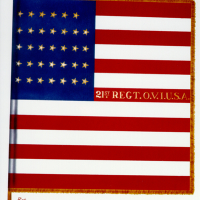
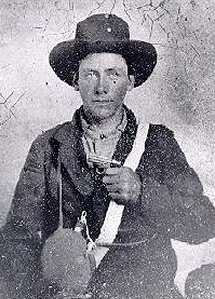
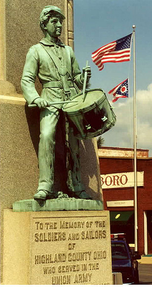

|
"Up to the time of the battle of Chickamauga, September 20,
1863," Captain S.S. Canfield notes in the preface of his
1893 history of the Twenty-First Ohio Volunteer Infantry
Regiment during the Civil War, "no reports of the operations
of the Regiment had been made, no record of its marches,
battles, or campaigns existed, except the brief report of
the battle of Stone's River, by Colonel Neibling, herein
given. At the battle on Snodgrass Hill, or Missionary Ridge,
on the afternoon the 20th of September, 1863, than which but
few more sanguinary battles are recorded in history, the
services of the 21st Ohio are practically ignored."
In the course of the study of the Civil War, quite often
the historian is apt to focus their efforts on the great
battles, the generals, and the public figures that stand out
so prominently during this period of American history. What
is often consigned to an afterthought concerns the
experiences of the average infantryman and his unit during
this conflict. What was it that motivated these men, both
North and South, to lay aside their civilian lives and
volunteer to fight for their respective cause? How did they
go about enduring the hardships associated with
soldier-hood? Historians who have probed those questions
have uncovered various personal, social and political
motivations behind the Civil War soldier that allowed him to
accomplish these feats. The Twenty-first Ohio Volunteer
Infantry Regiment provides one such example. This regiment
was, at first glance, unremarkable. Although it was active
throughout the course of the war in the Western Theater, it
participated only as one of many elements in few famous
|

The flag of the 21st Ohio Infantry
|
engagements and mostly in now forgotten battles. Volunteers
from several northwestern Ohio counties formed the regiment.
These soldiers came from rural backgrounds and were largely
undistinguished both before and after the conflict. It is
the undistinguished nature of the Twenty-first Ohio
Volunteer Infantry that prompted Captain Canfield to compose
a history of the regiment and it is this status that also
makes the unit a perfect subject for the study of a
regimental history in the context of the life of the average
Civil War soldier. This study, however, will not only focus
on the events that befell the above unit from its inception
to its first major engagement at the Battle of Stone's River
in December of 1862, but further, it will also seek to
explore the lives and experiences of the soldiers that
constituted the unit. In this case, special emphasis will be
placed on the assumed experiences of one soldier, Emanuel
Schamp, a private in Company E of the Twenty-First Ohio, who
was the great-great grandfather of the author. Such a study,
it is hoped, will shed light on a largely forgotten Federal
Regiment in the Civil War and the experiences of the average
soldiers that constituted it.
The Twenty-First Ohio Volunteer Infantry Regiment was
initially created to serve the requirements for President
Abraham Lincoln's call for some seventy-five thousand
volunteers to serve a three month term of service at the
outset of the Civil War. It was a well established fact that
most political leaders and military commanders (to say the
least of the soldiers) on both sides felt that the war would
be short and decided in a quick succession of battles. Hence
the short duration for the call to arms of many units. It
can readily be assumed that many of the initial volunteers
for this unit were motivated by the surge of patriotism that
followed in the wake of Fort Sumter. As the historian Bell
Irvine Wiley wrote of the words of a Detroit Reporter,
"Everybody eagerly asks everybody else if he's going to
enlist," and the same might have been said of almost any
other town or city in the North. The companies of the three
month volunteers Twenty-First Ohio Volunteers were recruited
largely from the northwest Ohio counties of Findlay, Ottawa,
Wood, and Putnam. This area, according to a demographic
survey made of the 1860 election results, was dominated by
the Douglas wing of the Democratic Party and it may be
assumed that many of the soldiers and officers that formed
the regiment held the sentiments of this political group. It
may thus be safe to conclude that the members of the
regiment enlisted largely due to patriotic and social
factors as opposed to political means.
The regiment was sworn into service at Camp Taylor near
Cleveland, Ohio on the 27th of April, 1861. On the 23rd of
May it was sent to the southeastern border of Ohio where it
encamped in order to watch for Confederate movements across
the Ohio River in Virginia (now West Virginia.) Few records
survive of the regiment's initial movements and action, the
best source coming from the regimental history of Captain
S.S. Canfield. Over the next two months, the Twenty-First
Ohio Regiment made several excursions into West Virginia,
seeking enemy contact under the command of Colonel Norton.
On the 17th of July, 1861 elements of the Twenty-First made
contact with Confederate forces entrenched at Scarytown,
West Virginia. Confederate forces at first repelled a
Federal charge, killing and wounding five of the soldiers of
the regiment and even capturing Colonel Norton. It is
assumed that he was later paroled or left behind as the
Confederate forces retreated towards Charleston, West
Virginia after the engagement, for he later reassumes
command of the regiment. On August 10, the Twenty-First Ohio
Three Month Volunteer Regiment was mustered out at Columbus,
Ohio. According to Captain Canfield, many of the three month
volunteers re-enlisted when the regiment was reformed later
in 1861.
The reformed Twenty-First Ohio Volunteer Regiment was
organized by Colonel J.S. Norton to respond to the call by
the Federal government to request several hundred thousand
three year volunteers to serve in the Union Army. To meet
this request, many of the three-month regiments were
reformed as three-year units and many of the soldiers that
had served in the previous unit re-enlisted into the newly
reformed regiment. Captain Canfield noted that the
reenlistment of the early war veterans "was of great benefit
as in the stress for troops in the fall of 1861, it would no
doubt have been disastrous if the entire dependence in that
emergency had been upon new levies." The example set by the
veterans apparently helped expedite the training and
drilling of the new recruits. Colonel Norton initially
called for fifteen companies to be pulled from the rural
Ohio counties of Hancock, Wood, Putnam, Ottawa, and
Defiance; ten would ultimately be formed and were designated
A through I, with the tenth company being Company K. These
companies began to arrive at the camp in Findlay, Ohio,
starting in August and the Regiment was officially mustered
on the 19th of September, 1861.
It was during this period that the author's ancestor,
Emanuel Schamp, enlisted into the Federal service as a
member of Company E, of the Twenty-First Ohio Volunteer
Infantry Regiment. Company E was organized at Farmer Center,
Ohio, in August of 1861 under the command of Captain James
P. Arrantes. It marched to a location known as Camp Vance,
arriving there on the 14th of August and then joined the
Twenty-First Ohio at Findlay, where the Regiment was
mustered in on the 19th of September, 1861.
Regarding the nature of the men who composed the Twenty
First Ohio Volunteer Infantry Regiment, Captain S.S.
Canfield provides the best overall description.
Interestingly, however, is how well his description, as well
as other facts gleaned about the regiment, fit the
description of the basic Civil War soldier as described by
Wiley, Mitchell, and McPherson. The men were said to be
mostly farmers and farmer's sons, though men of other
occupations naturally filled the ranks as well. The overly
rural nature of the men that comprised the regiment implied
to Canfield that they "were peaceful, quiet, industrious,
intelligent and self reliant, and were not contaminated by
the follies and vices of city life." The men were strong,
hardy and of a temperament that allowed them to adapt easily
to the rigorous life of a soldier. The men were also young,
at least half being between eighteen and twenty years of
age. Historian Reid Mitchell noted that considering Civil
War armies overall, three-fifths of the men were over
twenty-one years of age, with the average age of the
enlisted soldier being around twenty-four. Using the age
data provided for Company E of the Twenty-First Ohio
Volunteer Infantry Regiment, the average age of the
one-hundred and thirty-nine soldiers in this company was
about twenty-three years of age at enlistment. The youngest
age in the company was eighteen and the oldest (surprisingly
by modern recruitment standards) was forty-three!
The soldiers are described as being politically astute
and patriotic; in general it was noted that "their
intelligence gave them a just appreciation of the value and
advantage of free government and the necessity of defending
and maintaining it." Although largely unmentioned in
Canfield's text, it must also be readily assumed that
various cultural factors concerning Nineteenth Century
ideals about manhood played a strong role in encouraging the
men of the Twenty-First Ohio to enlist. The soldiers are
presented as being hardened and easily adaptable to the life
of a soldier, still, the need to prove the individual's
strength and temperament on the battlefield could have been
a motivational factor as well. It was noted that no physical
examination was given for the soldiers enlisting in the
regiment - if they could use their arms, march well, and
could tear a cartridge with their teeth, then the man was
fair game to become a soldier. The officers of the
Twenty-First Ohio Volunteer Infantry Regiment also deserve
certain recognition in describing the overall nature of the
regiment. As with many units in the Civil War, this regiment
suffered from the effects of both good and poor leadership
on the behalf of the officers. Many of the officers carried
over from the three-month regiment and their popularity was
of crucial importance in helping to bind together the new
regiment. The soldiers, for the large part, carried out the
orders of their superiors and performed well as soldiers.
Once the regiment had been mustered at Findlay, Ohio, it
proceeded to Camp Dennison, where it was armed and equipped.
On the second of October, 1861, the regiment was sent to
Nicholasville, Kentucky and attached to General Thomas'
command. Here it spent the next few weeks drilling and
preparing for active campaigning that was to first take
place in Kentucky, which began in the middle of October,
1861. Although a border state that technically remained with
the Union, Kentucky was heavily divided between loyalist and
secessionist groups during the tumultuous early years of the
Civil War. Federal troops were sent in to partly keep the
peace and to drive out any Confederate opposition sent to
support the Kentuckian secessionist groups. Confederate
forces were attempting an invasion of the state, part of
which attempted to seize eastern Kentucky by way of a town
known as Hazel Green. The Twenty-First Ohio was part of a
brigade under the command of General Thomas sent to repel
this invasion; the brigade consisted of the Second,
Twenty-First, Thirty-Third, and Fifty-Ninth Ohio regiments.
While encamped at Hazel Green, S.S. Canfield reported
that the men of the regiment were attacked by what he
considered "that scourge of camp life" - a bout of diarrhea.
The epidemic left few exempt and for a time practically
incapacitated the regiment until it marched to a different
locale. Such maladies are often attested to in primary and
secondary sources about the life of soldiers during the
Civil War. Historian James I. Robertson describes the
probable reason behind the Twenty-First Ohio Infantry's
epidemic in that "considering the combination of irregular
and unbalanced diets [of Civil War soldiers], the ignorance
of cooking methods, and a preference of the men for frying
everything in a sea of grease, one might wonder how the
troops kept their health. The answer, of course, is that
many of them did not." During the first week of November,
the Regiment saw its first combat in a small battle with an
entrenched Confederate force at a locale known as Ivy
Mountain. The Federal brigade of which the Twenty-First was
a part succeeded in dislodging the rebels and forcing them
into a retreat, suffering only light casualties. The
remainder of November, 1861 was spent by the regiment
marching about the mountainous terrain of eastern Kentucky
in what was termed a campaign of "severe labor, exposure,
and fatigue." There were frequent communication problems
between different elements of the brigade, often resulting
in the regiment marching to one location and the supplies
being delivered elsewhere. There were several small
skirmishes with the enemy during this time. From December
1861 through February 1862, the regiment was stationed at
Bacon Creek, Kentucky for winter quarters.
The reopening of the campaign in February of 1862 was
apparently met with much enthusiasm by the Twenty-First Ohio
and they campaigned further south in eastern Tennessee. On
the twenty-second of February, 1862, the regiment
participated in the advance and capture of Nashville, the
capital of Tennessee and the first Confederate state capital
to fall to Federal forces. The regiment then marched towards
Murfreesboro, Tennessee. Very little fighting was done by
the Twenty-First Ohio during much of February and March,
1862, the regiment often being detailed for fatigue duty and
construction projects. In early April, the regiment
participated in the capture of Huntsville, Alabama, which,
much in the same manner as the capture of Nashville two
months earlier, was bloodless and did not involve any
significant fighting. Nonetheless, various maneuvers were
conducted in the countryside surrounding Huntsville to guard
against Confederate guerillas which harassed the Union
supply lines. Captain Canfield does not gloss over the
hardships experienced by the soldiers while living on the
march in Tennessee and Alabama, in part because as the
Captain leading Company K of the regiment, he experienced
the cold nights spent sleeping in the mud and rain with
little food. He reports that the men generally took these
trials and tribulations of soldier-hood in good faith and
spirit. There was, however, only one complaint - that when
there was any fighting to be done, it had been the fortune
of the regiment to be somewhere else!
It was during this time that nine members of the
Twenty-First Ohio Regiment were involved in the famous
covert operation known as Pittinger's Raid on the Georgia
State Railroad. The goal of the mission [which was much
later dramatized in the famous Walt Disney film, The Great
Locomotive Chase] was to slip south into Georgia to some
point near Atlanta, capture a train, and returning on it,
destroy telegraph lines, bridges, and do all the damage they
could to the railroad before returning to Federal lines .
The plan was organized by General Mitchell and led by J.J.
Andrews. The raiders were able to get to Marietta, Georgia,
on the eighth of April, 1862, and commandeered a train while
the conductors were at breakfast. They started north, with
three box cars, but were soon pursued by the conductors of
the train they stole as well as other authorities. The
Mitchell raiders cut telegraph wires and damaged tracks, but
were unable to burn any bridges or slow their pursuers in
any way. Finally, abandoning their engine, the raiders tried
to make their escape, however Confederate authorities and
local citizens were able to hunt down and capture the
raiders. Several were executed as spies, including the
leader, Andrews but the rest were imprisoned in Atlanta,
Georgia where some escaped or were later exchanged. The
survivors were among some of the first US soldiers to be
awarded the Congressional Medal of Honor.
While the Twenty-First Ohio Volunteer Infantry was on
campaign during 1862, they were active in Confederate
territory and had to deal not only with occasional
skirmishes with Confederate pickets or guerillas, but the
soldiers also had to deal with the civilian populations of
the areas they marched through and occupied. The treatment
the regiment encountered greatly differed from location to
location. While the regiment was on the march to Hazel
Green, Kentucky, in October of 1861, they passed through the
town of Winchester where a very warm welcome was received
and the whole town put on a feast for the regiment and
attended to all their needs. Further, when the regiment
campaigned in Tennessee as part of the 9th Brigade in
February of 1862, it went through a town known as
Shelbyville. The scene that met the regiment was described
as this:
A large body of citizens, men, women, and children, had
collected on the street through which we passed, and the
stars and stripes were floating and waving in every
direction. The troops were cheered vociferously to which
they responded with a will. Bands played, and men and women
wept for joy.
These experiences in Kentucky and central Tennessee
contrasted greatly with what the regiment experienced when
it advanced into Alabama. Here the citizenry was naturally
much more hostile. In Huntsville, for example, it was noted
that the Federal soldiers saw "more hatred and spite than we
had before anywhere seen." It was also in Huntsville that
the soldiers experienced the temper of the Southern women,
who typically kept their distance from the Federal soldiers,
or verbally (and more rarely physically) assaulted them.
Other interesting relations occurred between some of the
higher-ranking officers and the local Southern elite.
Colonel Norton, the commanding officer of the Twenty First
Regiment, developed relations with the local elite planters
and other such scions of society in the area around
Huntsville. On one occasion he was invited to a "fish-bake"
party held beyond Federal lines by a local plantation owner.
The Colonel was apprehended in the act by General Mitchell,
commander of the Ninth Brigade, and was reprimanded for
being absent from his duties (and associating with the
enemy) and stripped of his command.
The sentiments generally held among the members of this
unit regarding the institution of Slavery also deserve
discussion, for it proved to be an issue of critical
importance in the early history of the regiment. James
McPherson has argued that "few Union soldiers professed to
fight for racial equality." That, at least during the first
three years of the war, the soldiers professed to fight for
the maintenance of the Union and its democratic
institutions, not the emancipation of the slaves. This
proved to be the very much the case with the Twenty-First
|

Simon Pressler, a member of the 21st Ohio Infantry
|
Ohio. The regiment, according to Canfield's history, was
apparently composed of nearly equal numbers of soldiers
adhering to the political ideologies of the Republican Party
and Douglas wing of the Democratic Party; each of which had
their own ideas regarding the institution of Slavery. As
noted previously, much of the regiment was recruited from a
heavily Democratic area of northwest Ohio. In the initial
surge of patriotism at the beginning of the war, these
differences regarding slavery and emancipation were laid
aside and the goal to protect the nation took precedence
over the issues surrounding Slavery, but the issue would
resurface while the unit was on campaign in the southern
states. The relation of the men of the Twenty -First Ohio
Volunteers and slavery would be a rather troublesome aspect
for the regiment during the early years of the Civil War.
The overall attitude of the regiment towards slavery was
largely ambivalent. While on campaign in the countryside of
Tennessee and Alabama, as well as during occupational duties
in northern Alabama, escaped slaves seeking asylum
invariably entered the encampment of the Twenty First Ohio,
as they did at most other Union camps. The officers and
soldiers, not having any protocol for dealing with what
would come to be known as contraband (and the Emancipation
Proclamation still two years away) did not allow the slaves
to stay in the regimental encampment. According to Captain
Canfield, escaped slaves were turned away and told which
direction to head to reach the north, or in most cases,
returned to their masters by the regimental staff. Colonel
Neibling, who assumed command of the regiment after Colonel
Norton's dismissal, was said to have held certain
pro-slavery sentiments and while the regiment was stationed
at Athens, Alabama from May to August, 1862 (to be
discussed in greater detail below) he carried on the
practice of detaining escaped slaves in the county jail
until their owners were able to claim them. This action ran
counter to the Second Confiscation act that was passed by
Congress in July of 1862 and caused some discord among the
more Republican-minded soldiers in the regiment, as well as
many of the others. In this instance, Captain Canfield
attempted to override the authority of the Colonel and free
the detained slaves. However this action led to his
temporary arrest on order from Colonel Neibling and nearly
to his removal from command. This action apparently led to
much discord and threatened mutiny from the soldiers of the
regiment, resulting in the formation of a committee of the
Regimental officers to investigate the matter of Colonel
Neibling's detaining the slaves as well as Canfield's arrest
for disobedience. In the end, all parties were acquitted of
any serious charges, but the slaves were released.
As time went on, even during the same occupational duties
in over the summer of 1862 as described above, the
sentiments of the regiment changed regarding how they dealt
with slavery. Although it seems that the majority of
soldiers still fit with McPherson's descriptions in that
they were fighting for the restoration of the Union and not
emancipation. Their attitudes slowly began to change,
however. The soldiers and officers increasingly took in
escaped slaves to perform various menial duties around the
encampment, such as cleaning and maintenance work. Over
time, the soldiers also grew weary of the constant
interference of southern slave hunters seeking to recapture
the escaped slaves in their encampment and threatened to
take physical action should the hunters enter. Further, it
was noted by Captain Canfield that after the battle of
Stone's River and the later Chickamauga campaign, the issue
of slavery ceased to be a divisive issue in the regiment.
This was due to the fact that the result of those battles
"provoked a spirit of determination in our men that never
could yield until the South was overthrown " and the chief
means to achieve that goal was to attack slavery itself.
To return to the experiences of the author's ancestor, it
cannot be said as to what Emanuel Schamp's exact sentiments
were regarding the institution of slavery as well as how he
would have viewed the actions conducted early on by the
regiment whereby they returned fugitive slaves to their
masters. In all likelihood, given that the area of Ohio
where Emanuel originated, he may have perhaps been
affiliated with the Douglas Democrats and therefore been
more ambivalent in his opinions toward slavery. Judging by
the author's grandfather's attitudes (those of Emanuel's
grandson) concerning African-Americans and perhaps other
such divisive political issues, such an attitude may be
accurate. Canfield noted that there was much discord in the
regiment regarding the Colonel Neibling's actions
surrounding the detention and return of slaves (nearly
reaching the point of mutiny) and it may be assumed that
Emanuel Schamp was a part of this, however, lacking any
surviving written record of his sentiments, such matters
cannot be conclusively proved or disproved.
Following the occupation of Huntsville, Alabama by Union
forces including the Twenty-First Ohio Volunteers, were sent
to occupy the town of Athens in late May of 1862. When
initially posted to occupy Athens, the railroad supply lines
were threatened, and three companies, including Company E
were assigned to protect the line, with the regimental
headquarters being stationed in Athens, Alabama. This
would be a long occupation, lasting from May 28 until August
28, and provides an interesting opportunity to comment on
the disciplinary situation of the regiment. The historian
Reid Mitchell noted that the American soldiers in the 1860s,
both North and South, "found military regimentation hard to
accept ." Quite often, the adjustment of independent farm
and city boys to the discipline required by the Army was a
difficult process. Disciplinary problems were a fact of life
for the Twenty-First Ohio volunteers. Even as early as their
stationing in Kentucky, an order issued by Colonel Norton
provides some insight into the sort of problems commanders
faced while trying to indoctrinate a few hundred Ohio
farmers into the discipline of the US Army, advising in
Order Number 22 that:
Commandants of companies will march in the rear of their
respective commands and will be held responsible for all who
may break ranks or fall to the rear. It is to be expected
that no man will break ranks unless absolutely necessary.
Time will be given on the march for rest and necessary
delays.
It can be seen that even in a relatively simple military
action such as marching in formation, these Ohio volunteers
found some initial difficulty. Reid Mitchell's observation
that many soldiers both North and South (who were
accustomed to setting their own schedules and indoctrinated
in democratic principles that prided independence), compared
military service to slavery was probably a sentiment held by
more than a few of the regulars in the Twenty-First Ohio
Infantry. Overall, however, it was noted that the regiment
developed a high standard of discipline from the weeks of
drilling at Bacon Creek, Kentucky. As the regiment moved on
campaign in Tennessee and Alabama, Canfield noted that since
that time in Kentucky, "the men had been ceaselessly active
and always proud in the discharge of their soldierly duties
- and the reckless, lawless element had been kept well in
subjection."
The regiment had not been stationed in Athens, Alabama,
long when the local citizens informed the Regimental command
that it would not be attacked while it remained in that town
- the regiment having previously encountered some light
skirmishes as it earlier made it way from Huntsville to
Athens. The result of this declaration on the regiment was
described as thus: "Relieved by this assurance of any
apprehension of danger, its duties were only nominal. All
necessity for vigilance and discipline ceased." Men on
picket were not watchful, seeking to pursue other activities
and pleasures while on post, and many southern citizens
passed in and out of the Federal lines. Soldiers and
officers mingled with each other and the citizens courted
soldiers in their homes. Little mention is made of any vices
the men took to during the lax days of the occupation of
Athens, save that some of the officers and men were said to
have "drank together and were merry." The soldiers are
described as chatting and enjoying themselves as the
opportunity warranted. General Order Number 6, issued by
Colonel Neibling on the 23rd of August, 1862 in Athens
provides further insight into the problems faced by the
regiment, as well as the attempts by the regimental
leadership to fix them:
Any soldier who shall hereafter be guilty of appearing
in the street improperly dressed, or any similar breach of
propriety, will be severely punished. And it is hereby made
the duty of all officers and soldiers to whom knowledge of
such case may come, to immediately report the same to these
[regimental] Headquarters.
It must be remembered that this was also the time in
which the Colonel detained slaves against orders from the US
Government and the men nearly mutinied on account of the
discord to be found in the regiment.
Several months later during the regiment's long
occupation of Murfreesboro, Tennessee, after the Battle of
Stone's river during the winter and spring of 1863 (to be
commented upon below), a similar, and perhaps more reckless,
lack of discipline developed within the Twenty-First Ohio
Volunteer regiment. Soldiers left and entered camp when they
pleased and neglected other duties. As Bell Wiley noted of
Confederate soldiers, and assuming that the same standards
could apply to Federal troops, "soldier life is notoriously
conducive to degeneration of some standards of morality." A
slack in morality was duly noted among other problems during
this occupation. Soldiers of the Twenty-First Ohio took up
stealing, or foraging in the area surrounding Murfreesboro.
Orders issued nearly a year earlier had attempted to
prohibit foraging and destruction of civilian (private)
property. It may be assumed that many of the other vices of
soldierly life such as gambling, drinking, cursing, and the
like were present during this period.
It is unclear as to how the soldiers of the Twenty-First
were allowed to degrade to such low levels of discipline,
both in the Athens example as well as later in Murfreesboro,
however the blame can be put squarely on the officers for
not keeping the men as active as they should have probably
been kept. Captain Canfield particularly points at Colonel
Neibling; citing that during February of 1863, while the
Colonel was on leave and a Lieutenant Colonel Stoughton was
placed in command and sought to properly rectify the problem
of discipline. He reinstituted daily periods of drill,
roll-calls for officers and enlisted men required, and
reestablished proper guard duty on the camp perimeters.
However, discipline was reported to have returned to its
former state upon the return of Colonel Neibling. The
disorder present in the regiment reached the notice of the
leadership at the Brigade level and the Twenty-First Ohio
was noted to have some of the poorest levels of organization
and discipline. Warnings were posted to the regimental
leadership, particularly Colonel Neibling, but these did not
have much effect. Yet the reason as to why few efforts were
made by the leadership of the Twenty-First Ohio to correct
the discipline of its soldiers is probably rather simple.
Canfield notes that little was accomplished by the
regimental leadership on account of not wanting to loose
popularity with the soldiers. Colonel Neibling, whose record
at enforcing discipline has now been well established, was
actually very popular with the soldiers and despite
warnings from Division and Brigade authorities, was retained
in command of the regiment. Such a relation between officer
and soldier based on popularity is supported by Mitchell and
may have had its roots in the volunteer nature of the
soldiers and officers as well. Reid Mitchell notes that the
Northern volunteer soldiers felt they "required different
treatment [and] the key to this different treatment was the
recognition that officers and men were fundamentally equal."
Hence volunteer officers were less likely to subject their
volunteer soldiers to the rigorous discipline demanded by
the Army. Canfield also describes this very tendency between
officers and men as well: "The method adopted in the regular
army was not adapted to the volunteer service. When the men
composing the regiment came together, all were of the same
rank." Hence, situations as that which characterized the
Twenty-First Ohio Volunteers whenever they were encamped at
some location for a length of time are partly explained.
Following the regiment's occupation of Athens, Alabama,
it proceed northward back to Nashville, Tennessee in late
August of 1862, as part of General Buell's defense of that
city against Confederate forces under Braxton Bragg. Company
E, the unit to which the author's ancestor Emanuel Schamp
belonged, was dispatched to Nashville ahead of the rest of
the Twenty-First Ohio and was attached to the Nineteenth
Illinois Infantry Regiment. While in route, the train
carrying the regiment and Company E was involved in a
Confederate guerilla ambush at Richland Creek, near Pulaski,
Tennessee. The Rebels had burnt bridges and trapped the
train, subsequently attacking it. The Federal soldiers,
certainly including the author's ancestor, were able to fend
off the attackers and suffered only light casualties.
Company E suffered one killed, and the Nineteenth Illinois
suffered two killed and several wounded. With the bridges
soon repaired, the train was able to make it through and the
whole of the Twenty-First Ohio Volunteers was reassembled in
Nashville on August 30, 1862 and took up a perimeter
position in defense of that city.
The actions around Nashville in the fall of 1862
comprised an active season of campaign for the Twenty-First
Ohio. They were engaged in a number of picket skirmishes, of
which they received special commendation for efficiency and
expediency in dealing with. However, their largest action
during the siege of Nashville was the battle of Lavergne, on
the Murfreesboro pike (road) on the sixth of October. This
battle was an attempt to dislodge the Confederate general
Robert Anderson from his headquarters - at Lavergne - and
hinder the Confederate advance on Nashville. It consisted of
a two pronged attack made of six Federal regiments, of which
the Twenty-First Ohio was one. About nine miles outside of
Nashville, contact with the Confederate force was made, and
"a sharp skirmish ensued, but the enemy [actually the
Thirty-Second Alabama Regiment] were driven. They made
another stand before we reached the position assigned to us,
but the delays caused by the attacks delayed the column [of
Federal troops] so that most of the enemy escaped.
The regiment succeeded in capturing Anderson's camp and
commandeered a variety of ammunition and foodstuffs. A
detachment of Company G of the Twenty-First Ohio Volunteers
was captured in this engagement, and paroled. The same was
done with the nearly two-hundred and forty Confederate
prisoners the Twenty-First Ohio took in this engagement. As
this was still the early part of the war and issues
concerning the treatment of Black prisoners had not yet
become an issue, parole was a common means by which
prisoners-of-war were dealt with on both sides. Of the
Battle at Lavergne, Captain Canfield relates the story of a
Major Sparks of the Texas Rangers, who was in the vicinity
of the battle and encountered the fleeing Rebel troops: "We
met up with a lot of the 32nd Alabama; and they were the
worst skeered set of fellers I ever saw," the Major
continued, "We tried to find out what happened, but couldn't
find out nothing, except one feller said, 'they was up at
Lavergne and the Yankees come and killed nearly all of
'em'." Thus are some of the forgotten exploits of an
average Federal volunteer regiment remembered.
The Twenty-First Ohio Volunteer Infantry Regiment had
seen much combat by December of 1862, however, the
engagements had all been on a relatively small scale, with
the vast majority constituting skirmishes between pickets or
bands of guerillas. This was all about to change as the
Twenty-First Ohio participated in its first major
engagement, the Battle of Stone's River. This battle
occurred as the climax of Bragg's advance against Nashville,
which had been under way for nearly two months. The battle
began when Federal forces under the supreme command of
General Rosecrans, and divided into two brigades under
Thomas and Sheridan (the Twenty-First Ohio was under Thomas'
command) advanced towards Murfreesboro, Tennessee, on the
26th of December, 1862. During this maneuver, the
Twenty-First Ohio was in the lead of its division and
encountered skirmishing, but otherwise no serious fighting.
By the 30th of December, both the Union and Confederate
forces had drawn their lines, straddling the Murfreesboro
road, with the Confederates backed up against Stones River
|

Statue honoring members of the 21st Ohio Infantry
|
and Murfreesboro past that. Both Rosecrans and Bragg had
similar strategies, which were simply to move to the right
of the opposing force and cut them off from their base. The
two armies camped near each other on the night of December
30th, and James McPherson recounts a touching scene where
the bands on the opposing sides commenced a musical battle,
trading popular songs only to finally "swing into the
sentimental strains of Home Sweet Home; others picked it up
and soon thousands of Yanks and Rebs who the next day would
kill each other were singing the familiar words together."
The battle began on December 31st with a Southern attack
on the right flank of Rosecrans' forces. The Twenty-First
Ohio was in this section, fronted by a corn field, and
encountered fierce fighting as Rebel troops attempted to
cross the field. At this same time, Thomas' command the made
up Rosecrans' right flank was starting to fall back due to
the Rebel onslaught, although Sheridan's force slowed the
advance enough to prevent it from becoming a Federal route.
During the morning the regiment was able to bravely hold its
ground in front of the cornfield, until it was flanked on
both sides by the Confederates, forcing it to retreat amid
some confusion to the Union lines that were formed along the
railroad track and turnpike. Of the efforts put up by the
Twenty-First Ohio, it was said by Colonel Neibling that "I
cannot picture to you the gallant conduct of my men during
the fight of the 31st ultimo. Officers and men universally
fought with desperation and bravery." The Union forces,
pushed back from their morning positions, held against Rebel
onslaughts later in the day, particularly near a bend in the
Union lines in a location known as the Round Forrest. Here
federal forces withheld against an attack by a Confederate
division led by John C. Breckinridge, former President
Buchanan's Vice President and 1860 southern Democratic
presidential candidate. Elements of the Twenty-First Ohio
were involved in this part of the action as well. The
regiment retired to the rear on the evening of December
31st, however, its fight was not over yet. A long night was
spent in the winter cold, with few rations, and the
expectance of a Rebel attack at any given time.
On the first of January, General Bragg wired Richmond to
inform them of a Confederate victory over Rosecrans' forces,
since it appeared he was forcing them back. General
Rosecrans, however, was determined to hold his position and
deny the Confederates the ability to advance. He fortified a
hill to the east of Stones River, and the elements of the
Twenty-First Ohio Volunteers were placed on the opposite
side of the river. Bragg now found himself in an
increasingly complicated position by Rosecrans refusal to
withdraw, and was loosing men. He nonetheless ordered an
attack on the fortified hill by Breckinridge's division, and
succeeded in forcing the Federal troops there to retreat.
The rebels reached the east bank of the river to be
confronted by Federal troops and artillery on the opposite
side, which decimated their army. The next day, the third of
January 1863, Bragg was forced to retreat. He had suffered
around thirty-four percent casualties, and Rosecrans, though
he had also suffered nearly a badly as Bragg with thirty-one
percent casualties, was receiving fresh reinforcements from
Nashville and could continue to fight. Bragg's army thus
retreated and took up position twenty-five miles to the
south of Murfreesboro, leaving that town open to the Federal
forces, which occupied it on the fifth.
During the engagement at Stones River between December
31, 1862 and January 3, 1863, Company E of the Twenty-First
Ohio Infantry was present and endured the harsh conditions
on the march, took part in the fighting, and suffered
casualties. Company E lost three men killed in combat or
from their wounds, and nine who were wounded but survived.
One of these wounded casualties was the author's ancestor,
Emanuel Schamp. According to the scant information gathered
by the author, he was wounded at some point during the
engagements of the regiment on the thirty-first of December,
the first and most intense day of the battle. Emanuel was
reported to have been wounded in the side, hand and
shoulder. It is unknown whether or not he was left on the
field, but it may be assumed that he was evacuated to the
rear at some point in the battle as he was not captured
(S.S. Canfield notes in his summation of the Stones River
aftermath that the less severely wounded that had not
already been evacuated had been taken prisoner. ) Given
that the nature of his wounds appears to be extensive,
Emanuel must have spent some time in a hospital recovering
during the time that the Twenty-First Ohio participated in
the occupation of Murfreesboro. Data provided in the roster
of Captain Canfield's regimental history shows that Emanuel
Schamp was honorably discharged from the Federal service on
the twenty-fifth of March, 1863 on a Surgeon's Certificate
of Disability. Such a measure could be issued if an illness
or a serious wound proved to be so disabling that a soldier
could not perform his duties. Judging by where Emanuel was
reported to be wounded, it is quite clear that after the
Stones River engagement, he would have been unable to carry
on as an effective soldier.
Immediately after the cessation of hostilities in the
area, details were sent by the Twenty-First out to bury the
dead and bring in the wounded. What faults had been held by
the officers and men before the battle had for the time been
redeemed by the contribution of the regiment to the Union
victory at Stones River. The unit did not come away
unscathed from this engagement. In total, one-hundred and
sixty-nine casualties were suffered, of which twenty-seven
were killed outright, with another twenty-seven dying later
of their wounds. Eleven men were captured, and One-hundred
and four were wounded. The casualties suffered by the
Twenty-First Ohio Infantry Volunteers, however, were not in
vain. The Union victory at Stones River carried with it
ramifications for Northern public sentiment and politics. It
brought some cheer to a public that was growing disheartened
with the fortunes of the Union army during this period and
it blunted, for a time, the copperhead offensive against the
Republican war effort. It must be remembered that, at least
in the Western Theater, this was the time that Grant and
Sherman's efforts to take Vicksburg were stalling, and the
earlier Confederate advances in Tennessee had brought much
Northern antipathy towards their war effort. Perhaps the
legacy of the Twenty First Ohio Infantry Regiment in the
first years of the American Civil War can be thought of
within the context of the larger series of events that led
to the victory timely victory at Stones River. President
Lincoln said to General Rosecrans of that moment, "I can
never forget, whilst I remember anything, you gave us a hard
earned victory which, had there been a defeat instead, the
nation could hardly have lived over."
Source: History 191 Student Tristan Shamp
|